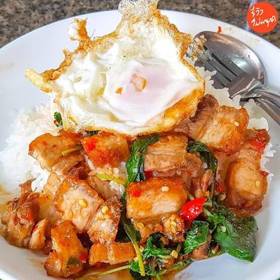

จุดเด่นของที่ร้านราดหน้าลุงรวยคือ ทุกเมนูของที่ร้านจะไม่ใส่ผงชูรสเด็ดขาด ความอร่อยของราดหน้าร้านนี้อยู่ที่ การใช้เตาถ่านในการปรุง เพื่อช่วยให้น้ำราดหน้ามีความหอม รวมถึงผักคะน้า ที่ทางร้านเลือกแต่แบบอวบอิ่ม กรอบและสด รวมถึงเนื้อหมูที่หมักโดยสูตรพิเศษจนเข้าเนื้อ

ร้านนี้อยู่คู่ตลาดโต้รุ่งมายาวนานมากกก คิดอะไรไม่ก็ต้องออกแวะร้านนี้เลยค่ะ อยากกินอาหารไทยเมนูไหนก็ให้สั่ง จัดให้เป็นหนึ่งในร้านอาหารตามสั่งเจ้าเด็ดเจ้าดังในดวงใจของชาวอุตรดิตถ์เลยจริง ๆ เมนูโปรดของเราร้านนี้ก็คือ “กะเพราหมกรอบราดข้าว” แล้วก็เหล่าเมนูผัดกะเพราทุกเมนูเลยค่ะ แซ่บมาก ๆ เผ็ดถึงใจมากค่ะ ชอบสุด ๆ ข้าวสวยหุงดี ข้าวร้อน ไม่ต้องราดพริกน้ำปลาเลย มันเผ็ดได้ใจจริง ๆ แถมวัตถุดิบที่ใช้ก็โอเคเลยอ่ะ
ร้านอาหารไทยตามสั่งชื่อดังที่ต้องมาลองให้ได้ของตลาดโต้รุ่งอีกหนึ่งร้าน เมนูเเนะนำคือ “ข้าวผัดกุ้ง” เสิร์ฟมาแบบแน่น ๆ กลิ่นกระเทียมหอมฟุ้ง ผัดกับกุ้งตัวใหญ่ สด และเนื้อเเน่นน่ารับประทาน ส่วนตัวชอบร้านนี้ เพราะอาหารตามสั่งน่ากิน คุณภาพดี และราคาก็น่าคบหาค่ะ